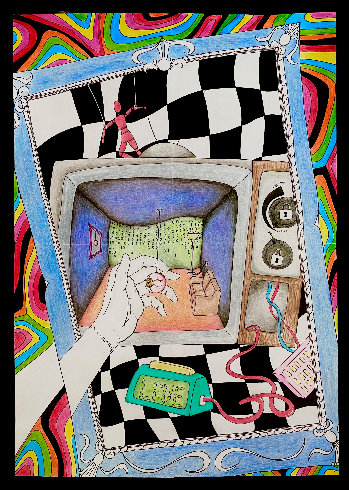
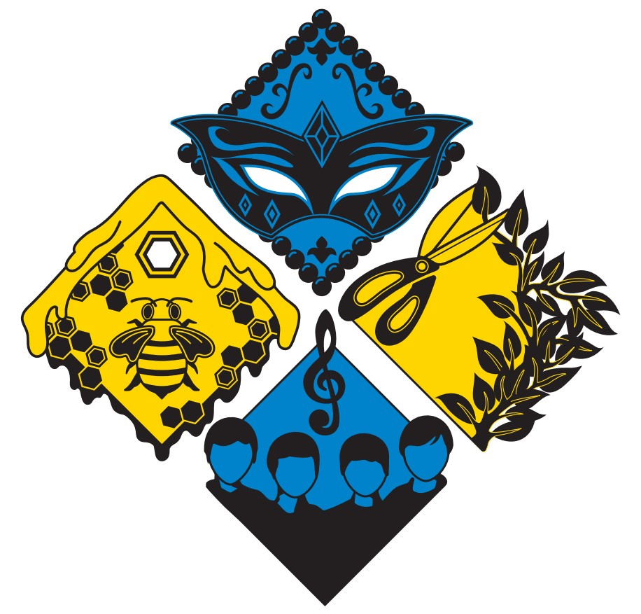

About Me
My name is Serena Lau and welcome to my profile! I enjoy longboarding, playing video games and picking up cats. I love fun, playful, pastel colours and soft, aesthetically pleasing work, but I also love creating surreal pieces as well, with thick black outlining and vibrant colours. In the future I hope to design a lot of visually appealing or impactful works that bring awareness and happiness to countless people.

My Work
- 
- 